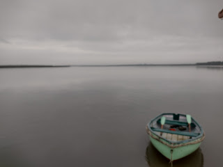
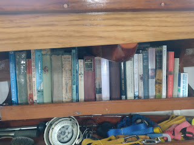
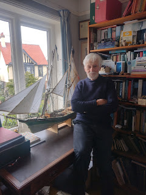
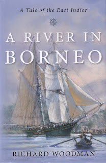
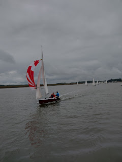
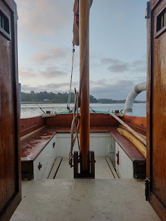
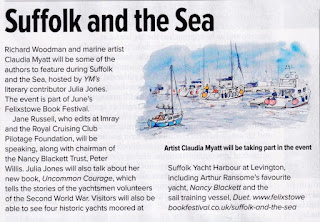

 |
| Looking down the River Deben towards Felixstowe Ferry |
{kind=link}
It’s grey outside with the hiss of rain. Peter Duck
rocks slightly. Why should she care if there are drips on my head, on the cabin
table and, occasionally, the laptop? She’s had what she demanded, which was
movement; release from the captivity of her mooring. She craved a voyage,
however small. She insisted. A boat always on a mooring is like a songbird in a cage.
At 0500 the surface of the water was a mirror for
the sky above. Not a ruffle of wind. A slow throb of engine gave us steerage
way as we moved down river in the early morning light. The ebb tide carried us
through Methersgate, Waldringfield, Ramsholt, then continued without us to
Felixstowe Ferry and the sea. We picked up the last of the Ramsholt moorings
for peace, breakfast and time to think. The
quiet was astounding.
Apart from the river birds. Nothing silences them. A tern settled on top of the main mast, spreading its sickle wings and forked-fan tail, opening its sharp beak to whirr assertively towards an unseen competitor or potential mate. The Falkenham marshes lie beyond the river wall. That tern could see across to Trimley and the Orwell, perhaps also Levington...
The cranes and gantries of Felixstowe Port were
blurred by rain. For a mere human Peter Duck’s cabin felt more appealing than the top of the mainmast.
Secret Water is among some favourite companions on the cabin bookshelf. Over tea in Harwich yesterday, my friend Richard Woodman recalled how a copy of Arthur Ransome’s We Didn’t Mean to go to Sea had caught his imagination in his north London primary school, when he was a small boy. ‘It was followed by the entirely magical Secret Water.’ We Didn’t Mean to go to Sea was written when the Ransomes lived at Broke House, Levington and owned Nancy Blackett. That tern could be there in a few wing beats.
 |
| PD bookshelf (portside) |
{kind=link}
Back to the north London primary school. Richard Woodman’s experience was probably shared by many other urban children who read Ransome and were inspired. But how to make their dreams come true? Woodman was a cub scout in those days. His local group had occasional use of a 14’ whaler which belonged to the RNSA (Royal Navy Sailing Association) and was kept at Pin Mill. There was a chart of the Orwell pinned up on the scout hut wall. ‘I didn’t realise that I’d get to know the Beach End buoy better that the Walker children ever did!’ But that was much later during his thirty years’ service with Trinity House, the Harwich-based organisation which is responsible for all the navigation marks round the British Isles. For most of Woodman’s time he was captain of the Patricia, the Trinity House flagship, responsible for jobs such as supplying the lighthouse keepers and the men who manned the light vessels, as well as changing the bulbs. His scout group had provided sea-going experience which in turn led to a life-time career at sea – and as a writer.
{kind=link}
The young Woodman was good at art and English. He failed the maths and physics which he needed for a merchant navy apprenticeship. The Blue Funnel line took him anyway because of the experience he’d achieved through the sea scouts - following that initial discovery of the sea via Arthur Ransome. Learning to use a sextant and write up his midshipman’s log he made informal sketches but turned increasingly to words. His first book, Voyage East, came from these early experiences. He fears that similar chances are not available to today’s young people – especially those who don’t pass all their exams. ‘As a merchant navy apprentice I’d worked my way round the world before I was (legally) allowed to enter a pub.’
Later, as captain of the Patricia,
Woodman arranged his office so that it had two desks. One was very formal, as
befitted his role. If you were there on official business – or worse, if you
were a defaulter (this was rare) - you would be ushered into the Captain’s Office,
and all would be conducted according to correct form. But behind the door there
was a second desk with a typewriter on it. In the typewriter there was always a
sheet of paper – the current work in progress.
Over his lifetime Woodman has written approximately 70 works of fiction and non- fiction. Some are magisterial, such as his five-volume history of the merchant navy, three detailed accounts of the World War Two convoys; a history of the East India company, a history of lighthouses. Others are designed to entertain, such as his 'Nathanial Drinkwater' Napoleonic adventures which are still selling forty years after first publication (1981).
Woodman feels he’s been part of a world that is gone from our national heritage. Certainly the Port of Felixstowe is a very different place from the days that Ransome wrote We Didn’t Mean to Go to Sea and the young Woodman looked across from Harwich where he had called as part of the Sea Scouts crew on board the ex-German Nordwind in the 1960 Tall Ships race. His final novel, A River in Borneo, published 2021, was inspired by a model he built for his grandson and harks back to a world when sailing rather than steam ships, were the mainstay of world trade.
 |
| Richard Woodman with the model he built for his grandson |
.jpg){kind=link}
 |
| A River in Borneo Woodman's final novel inspired by his model |
{kind=link}
 |
| Racers from Waldringfield |
{kind=link}
Then it was sails up, finally, for PD, pulling away from her temporary mooring with that indescribable feeling as she feels the wind’s power. By evening we were back on the mooring again. Sail covers on, ropes coiled neatly, a meal cooking and that bookshelf waiting above my bunk. It had only been twelve hours away but it was time, out of time ...
 |
| Next morning, a new day viewed from PD's cabin |
{kind=link}
Richard Woodman and Claudia Myatt will be among the speakers at the Suffolk and the Sea fringe event, part of the Felixstowe Book Festival. It’s being supported (among others) by the Nancy Blackett Trust in an event entitled You Too Can Go to Sea – opening up opportunities to young, disadvantaged or disabled people today. Tickets are available from the Felixstowe Book Festivalwebsite.
There’s a footpath from Levington marina to the Two Sisters Arts Centre at Trimley where the event takes place. Golden Duck is sponsoring some free tickets for festival goers who arrive by boat. Email me julia@golden-duck.co.uk or visit our website for more details
 |
| featured in Yachting Monthly |
{kind=link}